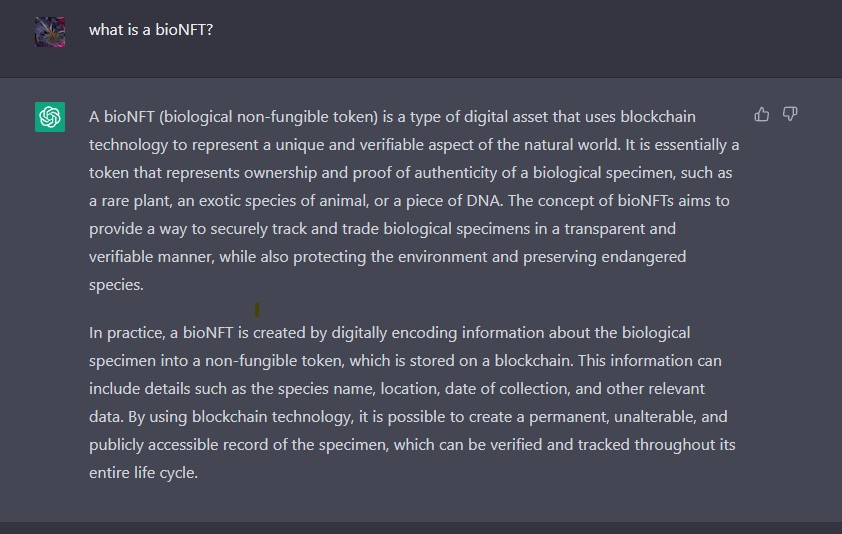
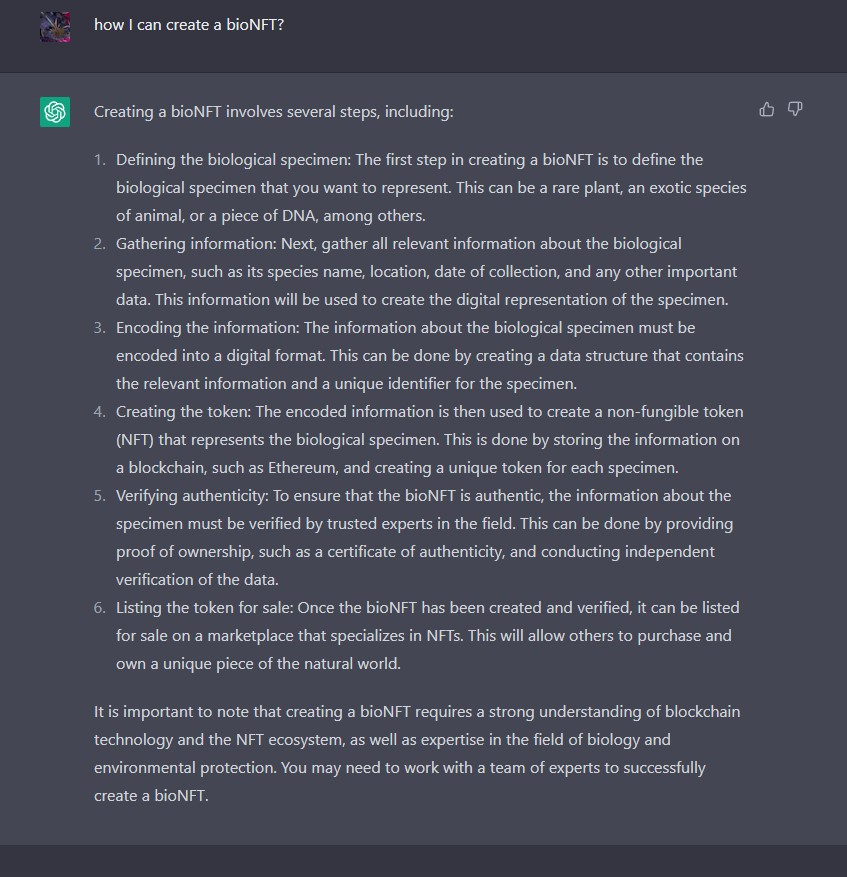
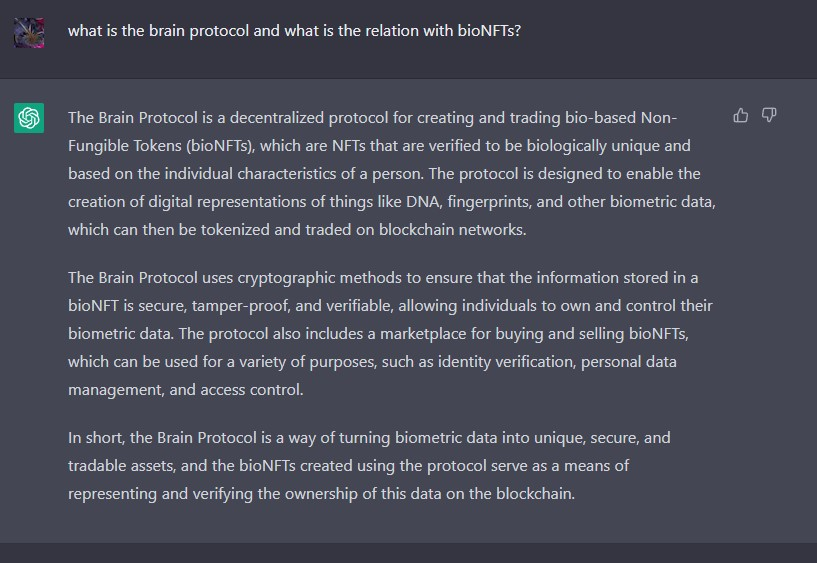

...a conversation with chatGPT
what is a BioNFT?
A bioNFT (biological non-fungible token) is a type of digital asset that uses blockchain technology to represent a unique and verifiable aspect of the natural world. It is essentially a token that represents ownership and proof of authenticity of a biological specimen, such as a rare plant, an exotic species of animal, or a piece of DNA. The concept of bioNFTs aims to provide a way to securely track and trade biological specimens in a transparent and verifiable manner, while also protecting the environment and preserving endangered species.
In practice, a bioNFT is created by digitally encoding information about the biological specimen into a non-fungible token, which is stored on a blockchain. This information can include details such as the species name, location, date of collection, and other relevant data. By using blockchain technology, it is possible to create a permanent, unalterable, and publicly accessible record of the specimen, which can be verified and tracked throughout its entire life cycle.

how I can create a bioNFT?
- 1. Defining the biological specimen: The first step in creating a bioNFT is to define the biological specimen that you want to represent. This can be a rare plant, an exotic species of animal, or a piece of DNA, among others.
- 2. Gathering information: Next, gather all relevant information about the biological specimen, such as its species name, location, date of collection, and any other important data. This information will be used to create the digital representation of the specimen.
- 3. Encoding the information: The information about the biological specimen must be encoded into a digital format. This can be done by creating a data structure that contains the relevant information and a unique identifier for the specimen.
- 4. Creating the token: The encoded information is then used to create a non-fungible token (NFT) that represents the biological specimen. This is done by storing the information on a blockchain, such as Ethereum, and creating a unique token for each specimen.
- 5. Verifying authenticity: To ensure that the bioNFT is authentic, the information about the specimen must be verified by trusted experts in the field. This can be done by providing proof of ownership, such as a certificate of authenticity, and conducting independent verification of the data.
- 6. Listing the token for sale: Once the bioNFT has been created and verified, it can be listed for sale on a marketplace that specializes in NFTs. This will allow others to purchase and own a unique piece of the natural world.
It is important to note that creating a bioNFT requires a strong understanding of blockchain technology and the NFT ecosystem, as well as expertise in the field of biology and environmental protection. You may need to work with a team of experts to successfully create a bioNFT.

what is the brain protocol and what is the relation with bioNFTs?
The Brain Protocol is a decentralized protocol for creating and trading bio-based Non-Fungible Tokens (bioNFTs), which are NFTs that are verified to be biologically unique and based on the individual characteristics of a person. The protocol is designed to enable the creation of digital representations of things like DNA, fingerprints, and other biometric data, which can then be tokenized and traded on blockchain networks. The Brain Protocol uses cryptographic methods to ensure that the information stored in a bioNFT is secure, tamper-proof, and verifiable, allowing individuals to own and control their biometric data. The protocol also includes a marketplace for buying and selling bioNFTs, which can be used for a variety of purposes, such as identity verification, personal data management, and access control. In short, the Brain Protocol is a way of turning biometric data into unique, secure, and tradable assets, and the bioNFTs created using the protocol serve as a means of representing and verifying the ownership of this data on the blockchain.
